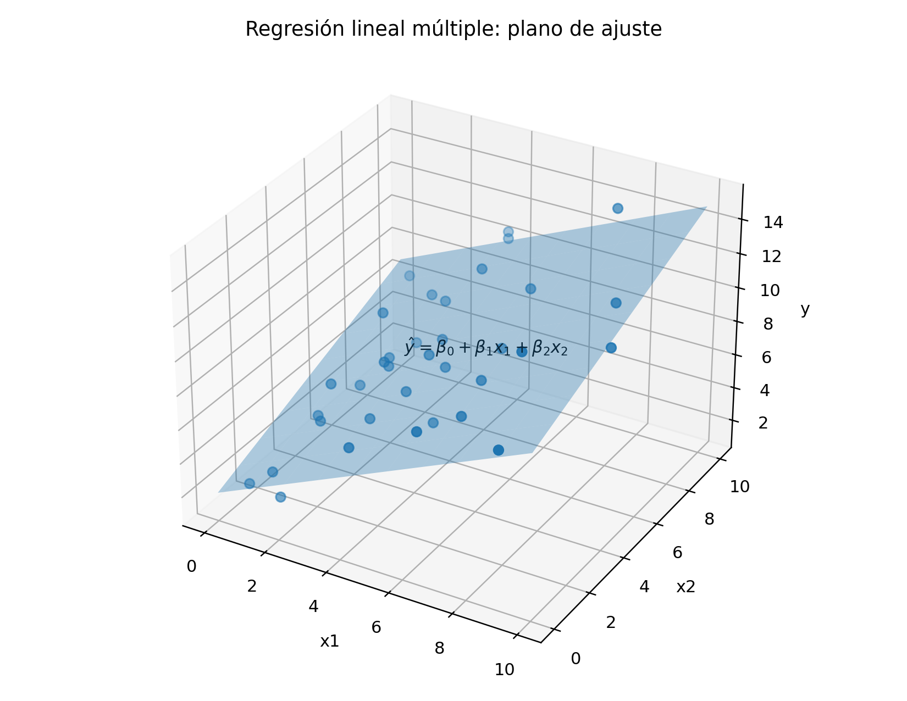

La regresión lineal múltiple extiende el modelo lineal a varios predictores. Cada coeficiente tiene una interpretación condicional: representa el cambio esperado en la respuesta al modificar una variable mientras las demás permanecen fijas (Montgomery et al. 2021; Seber y Lee 2012).
La regresión lineal múltiple extiende la regresión lineal simple al estudio simultáneo de varias variables explicativas. Su objetivo es modelar el valor esperado de una respuesta \(Y\) mediante una combinación lineal de \(p\) características.
Este modelo permite analizar el efecto parcial de cada variable manteniendo constantes las demás, construir predicciones, evaluar hipótesis conjuntas, incorporar variables categóricas, representar interacciones y estudiar problemas de multicolinealidad.
La formulación matricial es especialmente importante porque permite expresar de manera compacta la estimación, la inferencia y la geometría del modelo.
ImportanteDefinición esencial
La regresión lineal múltiple modela una respuesta mediante varios predictores.
Objetivos
Al finalizar el capítulo, el lector podrá:
formular el modelo lineal múltiple;
construir la matriz de diseño;
interpretar coeficientes parciales;
derivar el estimador de mínimos cuadrados;
comprender la geometría de la proyección;
analizar las propiedades de los estimadores;
construir pruebas \(t\) individuales;
formular la prueba \(F\) global;
comparar modelos anidados;
interpretar \(R^2\) y \(R^2\) ajustado;
incorporar variables indicadoras;
interpretar interacciones;
diagnosticar multicolinealidad;
calcular factores de inflación de varianza;
analizar residuos, apalancamiento e influencia;
reconocer limitaciones predictivas y causales.
Formulación del modelo
Para \(n\) observaciones y \(p\) variables explicativas, el modelo es
Definición 10.1 La matriz de diseño es la matriz que contiene los valores de las variables explicativas y, cuando existe intercepto, una primera columna de unos.
Cada fila representa una observación.
Cada columna representa:
el intercepto;
una variable numérica;
una variable indicadora;
una interacción;
una transformación.
Interpretación de los coeficientes
El coeficiente \(\beta_j\) representa el cambio esperado en \(Y\) cuando \(x_j\) aumenta una unidad, manteniendo constantes las demás variables.
La interpretación geométrica de la regresión lineal múltiple resulta especialmente útil cuando se analizan los valores ajustados y los residuos. Si el modelo tiene dos variables explicativas, la superficie ajustada puede visualizarse como un plano en tres dimensiones.

Figura 10.1: Ilustración conceptual de la regresión lineal múltiple mediante un plano de ajuste sobre una nube de observaciones.
En esta representación, cada valor ajustado corresponde a la altura del plano sobre el punto \((x_{i1}, x_{i2})\), mientras que el residuo es la distancia vertical entre el valor observado y el plano ajustado. Por tanto,
\[
e_i = y_i - \hat{y}_i.
\]
Cuando el número de predictores es mayor que dos, la superficie ajustada deja de ser visualizable como un plano ordinario y pasa a ser un hiperplano en dimensión superior, pero la idea geométrica del residuo como discrepancia entre observación y ajuste permanece.
Con un término de interacción, el efecto de una variable depende del valor de otra. Los efectos principales dejan de representar efectos globales constantes.
Variables categóricas
Una variable categórica con \(K\) niveles se representa mediante \(K-1\) variables indicadoras cuando existe intercepto.
El modelo sigue siendo lineal en los parámetros, aunque no sea lineal en \(X\).
Centrado de variables
Defina
\[
Z_j
=
X_j-\overline{X}_j.
\]
El centrado puede:
mejorar la interpretación del intercepto;
reducir correlación entre términos principales e interacciones;
mejorar estabilidad numérica.
Multicolinealidad
Definición 10.3 Existe multicolinealidad cuando algunas variables explicativas presentan relaciones lineales fuertes.
Puede ser:
exacta;
aproximada.
Consecuencias
La multicolinealidad puede producir:
errores estándar grandes;
coeficientes inestables;
cambios de signo;
pruebas individuales no significativas;
sensibilidad a pequeñas modificaciones;
dificultad de interpretación.
Puede existir una prueba \(F\) global significativa junto con pruebas \(t\) individuales no significativas.
AdvertenciaMulticolinealidad
La multicolinealidad no introduce necesariamente sesgo, pero aumenta la varianza de los coeficientes y puede volver inestables sus signos e interpretaciones.
Factor de inflación de varianza
Para la variable \(X_j\), se ajusta una regresión usando las demás variables como predictores.
Sea \(R_j^2\) el coeficiente de determinación obtenido.
El VIF es
\[
VIF_j
=
\frac{
1
}{
1-R_j^2
}.
\]
Interpretación del VIF
Si las variables son ortogonales,
\[
R_j^2=0
\]
y
\[
VIF_j=1.
\]
Valores grandes indican inflación de varianza.
No existe un umbral universal, aunque se usan reglas prácticas como 5 o 10.
\(X_3\) es una variable indicadora de temporada seca.
Ejercicio de prueba global
Supóngase:
\[
SSR=480,
\]
\[
SSE=120,
\]
\[
n=30,
\]
\[
p=3.
\]
Calcule:
\(MSR\);
\(MSE\);
el estadístico \(F\);
los grados de libertad;
interprete el contraste.
Ejercicio de modelos anidados
Un modelo reducido tiene
\[
SSE_R=250
\]
con dos predictores.
El modelo completo tiene
\[
SSE_C=190
\]
con cinco predictores.
Además,
\[
n=50.
\]
Calcule la prueba \(F\) parcial.
Ejercicio de VIF
Una variable \(X_j\) se regresa contra las demás y se obtiene
\[
R_j^2=0.90.
\]
Calcule \(VIF_j\).
Calcule la tolerancia.
Interprete el resultado.
Proponga estrategias.
Ejercicio de interacción
Considere
\[
Y
=
5
+
2X
+
4D
-
1.5XD.
\]
Escriba la recta para \(D=0\).
Escriba la recta para \(D=1\).
Compare interceptos.
Compare pendientes.
Interprete la interacción.
Ejercicio aplicado
Se desea predecir PM10 usando:
temperatura;
humedad;
velocidad del viento;
temporada;
interacción temperatura-temporada.
Diseñe el análisis incluyendo:
formulación del modelo;
construcción de indicadores;
interpretación de coeficientes;
prueba global;
pruebas individuales;
diagnóstico de multicolinealidad;
análisis de residuos;
validación;
predicción;
limitaciones causales.
Resumen
En este capítulo se desarrolló la regresión lineal múltiple mediante formulación matricial.
Se derivó el estimador de mínimos cuadrados, se estudiaron sus propiedades, su interpretación geométrica y la matriz sombrero.
También se presentaron pruebas individuales y globales, comparación de modelos anidados, \(R^2\), \(R^2\) ajustado, predicción, variables categóricas, interacciones y transformaciones.
Finalmente, se analizaron multicolinealidad, VIF, selección de variables, apalancamiento, influencia y diagnóstico. Estos fundamentos preparan el estudio de regresión logística y modelos lineales más avanzados.
Seudocódigo formal
NotaSeudocódigo matemático formal
Algoritmo MCO-Lineal-MúltipleEntrada: X ∈ ℝ^{n×(p+1)} con primera columna de unos, y ∈ ℝ^nSalida: \hatβ ∈ ℝ^{p+1}, \hat y y residuos e1. Formar la matriz normal A = X^T X y el vector b = X^T y.2. Resolver el sistema lineal A \hatβ = b o, si A es invertible, \hatβ = (X^T X)^{-1} X^T y.3. Calcular \hat y = X \hatβ, e = y - \hat y.4. Evaluar SSR = ||\hat y - \bar y \mathbf{1}||^2, SSE = ||e||^2.5. Devolver \hatβ y el modelo \hat f(x)=x^T\hatβ.
Referencias del capítulo
Los fundamentos se apoyan en Montgomery et al. (2021), Seber y Lee (2012), Hastie et al. (2009) y Mardia et al. (1979).
Hastie, Trevor, Robert Tibshirani, y Jerome Friedman. 2009. The Elements of Statistical Learning: Data Mining, Inference, and Prediction. 2.ª ed. Springer. https://doi.org/10.1007/978-0-387-84858-7.
Mardia, Kanti V., John T. Kent, y John M. Bibby. 1979. Multivariate Analysis. Academic Press.
Montgomery, Douglas C., Elizabeth A. Peck, y G. Geoffrey Vining. 2021. Introduction to Linear Regression Analysis. 6.ª ed. Wiley.
Seber, George A. F., y Alan J. Lee. 2012. Linear Regression Analysis. 2.ª ed. Wiley.
Ejecutar el código
# Regresión lineal múltiple\index{Regresión lineal múltiple} {#sec-regresion-lineal-multiple}## Introducción {.unnumbered}La regresión lineal múltiple extiende el modelo lineal a varios predictores. Cada coeficiente tiene una interpretación condicional: representa el cambio esperado en la respuesta al modificar una variable mientras las demás permanecen fijas [@montgomery2021introduction; @seber2012linear].La regresión lineal múltiple extiende la regresión lineal simple al estudio simultáneo de varias variables explicativas. Su objetivo es modelar el valor esperado de una respuesta $Y$ mediante una combinación lineal de $p$ características.Este modelo permite analizar el efecto parcial de cada variable manteniendo constantes las demás, construir predicciones, evaluar hipótesis conjuntas, incorporar variables categóricas, representar interacciones y estudiar problemas de multicolinealidad\index{Multicolinealidad}.La formulación matricial es especialmente importante porque permite expresar de manera compacta la estimación, la inferencia y la geometría del modelo.::: {.callout-important title="Definición esencial" appearance="default" icon="true"}La regresión lineal múltiple modela una respuesta mediante varios predictores.:::## Objetivos {.unnumbered}Al finalizar el capítulo, el lector podrá:1. formular el modelo lineal múltiple;2. construir la matriz de diseño;3. interpretar coeficientes parciales;4. derivar el estimador de mínimos cuadrados;5. comprender la geometría de la proyección;6. analizar las propiedades de los estimadores;7. construir pruebas $t$ individuales;8. formular la prueba $F$ global;9. comparar modelos anidados;10. interpretar $R^2$ y $R^2$ ajustado;11. incorporar variables indicadoras;12. interpretar interacciones;13. diagnosticar multicolinealidad;14. calcular factores de inflación de varianza;15. analizar residuos, apalancamiento e influencia;16. reconocer limitaciones predictivas y causales.## Formulación del modelo {.unnumbered}Para $n$ observaciones y $p$ variables explicativas, el modelo es$$Y_i=\beta_0+\beta_1 x_{i1}+\beta_2 x_{i2}+\cdots+\beta_p x_{ip}+\varepsilon_i,$$para$$i=1,\ldots,n.$$La función de regresión es$$\mathbb{E}(Y_i\mid\mathbf{x}_i)=\beta_0+\sum_{j=1}^{p}\beta_j x_{ij},$$donde$$\mathbf{x}_i=\begin{pmatrix}x_{i1}\\\vdots\\x_{ip}\end{pmatrix}\in\mathbb{R}^{p}.$$Para incorporar el intercepto en la formulación matricial se utilizará el vector aumentado$$\widetilde{\mathbf{x}}_i=\begin{pmatrix}1\\x_{i1}\\\vdots\\x_{ip}\end{pmatrix}\in\mathbb{R}^{p+1}.$$## Formulación matricial {.unnumbered}El modelo puede escribirse como$$\mathbf{y}=\mathbf{X}\boldsymbol{\beta}+\boldsymbol{\varepsilon},$$donde$$\mathbf{y}=\begin{pmatrix}y_1\\y_2\\\vdots\\y_n\end{pmatrix},$$$$\mathbf{X}=\begin{pmatrix}1 & x_{11} & x_{12} & \cdots & x_{1p}\\1 & x_{21} & x_{22} & \cdots & x_{2p}\\\vdots & \vdots & \vdots & \ddots & \vdots\\1 & x_{n1} & x_{n2} & \cdots & x_{np}\end{pmatrix},$$y$$\boldsymbol{\beta}=\begin{pmatrix}\beta_0\\\beta_1\\\vdots\\\beta_p\end{pmatrix}\in\mathbb{R}^{p+1}.$$Con esta convención,$$\mathbb{E}(Y_i\mid\mathbf{x}_i)=\widetilde{\mathbf{x}}_i^{\mathsf T}\boldsymbol{\beta}.$$La matriz $\mathbf{X}$ tiene dimensión$$n\times(p+1).$$## Matriz de diseño {.unnumbered}::: {#def-matriz-diseno}La matriz de diseño es la matriz que contiene los valores de las variables explicativas y, cuando existe intercepto, una primera columna de unos.:::Cada fila representa una observación.Cada columna representa:- el intercepto;- una variable numérica;- una variable indicadora;- una interacción;- una transformación.## Interpretación de los coeficientes {.unnumbered}El coeficiente $\beta_j$ representa el cambio esperado en $Y$ cuando $x_j$ aumenta una unidad, manteniendo constantes las demás variables.Formalmente,$$\frac{\partial}{\partial x_j}\mathbb{E}(Y\mid\mathbf{x})=\beta_j.$$Esta interpretación depende de que mantener constantes las demás variables sea conceptualmente posible.## Ejemplo ambiental {.unnumbered}Considere$$\operatorname{PM10}=\beta_0+\beta_1\operatorname{Temperatura}+\beta_2\operatorname{Humedad}+\beta_3\operatorname{Viento}+\varepsilon.$$Entonces $\beta_1$ representa el cambio promedio esperado en PM10 por cada unidad adicional de temperatura, manteniendo constantes humedad y viento.## Supuestos clásicos {.unnumbered}### Linealidad en los parámetros {.unnumbered}$$\mathbb{E}(\mathbf{y}\mid\mathbf{X})=\mathbf{X}\boldsymbol{\beta}.$$### Media condicional cero {.unnumbered}$$\mathbb{E}(\boldsymbol{\varepsilon}\mid\mathbf{X})=\mathbf{0}.$$### Homocedasticidad {.unnumbered}$$\operatorname{Var}(\boldsymbol{\varepsilon}\mid\mathbf{X})=\sigma^2\mathbf{I}.$$### Ausencia de autocorrelación {.unnumbered}$$\operatorname{Cov}(\varepsilon_i,\varepsilon_j\mid\mathbf{X})=0,\qquad i\neq j.$$### Rango completo {.unnumbered}$$\operatorname{rank}(\mathbf{X})=p+1.$$### Normalidad para inferencia exacta {.unnumbered}$$\boldsymbol{\varepsilon}\simN_n(\mathbf{0},\sigma^2\mathbf{I}).$$## Criterio de mínimos cuadrados {.unnumbered}Se desea minimizar$$S(\boldsymbol{\beta})=\left\|\mathbf{y}-\mathbf{X}\boldsymbol{\beta}\right\|_2^2.$$Equivalentemente,$$S(\boldsymbol{\beta})=(\mathbf{y}-\mathbf{X}\boldsymbol{\beta})^{\mathsf T}(\mathbf{y}-\mathbf{X}\boldsymbol{\beta}).$$## Expansión de la función objetivo {.unnumbered}$$S(\boldsymbol{\beta})=\mathbf{y}^{\mathsf T}\mathbf{y}-2\boldsymbol{\beta}^{\mathsf T}\mathbf{X}^{\mathsf T}\mathbf{y}+\boldsymbol{\beta}^{\mathsf T}\mathbf{X}^{\mathsf T}\mathbf{X}\boldsymbol{\beta}.$$## Derivación del estimador {.unnumbered}El gradiente es$$\nabla_{\boldsymbol{\beta}}S=-2\mathbf{X}^{\mathsf T}\mathbf{y}+2\mathbf{X}^{\mathsf T}\mathbf{X}\boldsymbol{\beta}.$$Igualando a cero,$$\mathbf{X}^{\mathsf T}\mathbf{X}\widehat{\boldsymbol{\beta}}=\mathbf{X}^{\mathsf T}\mathbf{y}.$$Estas son las ecuaciones normales.Si $\mathbf{X}^{\mathsf T}\mathbf{X}$ es invertible,$$\widehat{\boldsymbol{\beta}}=\left(\mathbf{X}^{\mathsf T}\mathbf{X}\right)^{-1}\mathbf{X}^{\mathsf T}\mathbf{y}.$$## Condición de unicidad {.unnumbered}La solución es única si las columnas de $\mathbf{X}$ son linealmente independientes.Si existe dependencia lineal exacta,$$\mathbf{X}^{\mathsf T}\mathbf{X}$$es singular.## Valores ajustados {.unnumbered}$$\widehat{\mathbf{y}}=\mathbf{X}\widehat{\boldsymbol{\beta}}.$$Sustituyendo,$$\widehat{\mathbf{y}}=\mathbf{X}\left(\mathbf{X}^{\mathsf T}\mathbf{X}\right)^{-1}\mathbf{X}^{\mathsf T}\mathbf{y}.$$## Matriz sombrero {.unnumbered}::: {#def-matriz-sombrero-multiple}La matriz sombrero es$$\mathbf{H}=\mathbf{X}\left(\mathbf{X}^{\mathsf T}\mathbf{X}\right)^{-1}\mathbf{X}^{\mathsf T}.$$:::Entonces,$$\widehat{\mathbf{y}}=\mathbf{H}\mathbf{y}.$$La matriz $\mathbf{H}$ es:- simétrica;- idempotente.Es decir,$$\mathbf{H}^{\mathsf T}=\mathbf{H},$$y$$\mathbf{H}^2=\mathbf{H}.$$## Residuos {.unnumbered}$$\mathbf{e}=\mathbf{y}-\widehat{\mathbf{y}}.$$Como$$\widehat{\mathbf{y}}=\mathbf{H}\mathbf{y},$$entonces$$\mathbf{e}=(\mathbf{I}-\mathbf{H})\mathbf{y}.$$## Interpretación geométrica de los residuos {.unnumbered}La interpretación geométrica de la regresión lineal múltiple resulta especialmente útil cuando se analizan los **valores ajustados** y los **residuos**. Si el modelo tiene dos variables explicativas, la superficie ajustada puede visualizarse como un plano en tres dimensiones.{#fig-regresion-lineal-multiple width=82% fig-alt="Gráfico tridimensional con observaciones y un plano de regresión lineal múltiple"}En esta representación, cada valor ajustado corresponde a la altura del plano sobre el punto $(x_{i1}, x_{i2})$, mientras que el residuo es la distancia vertical entre el valor observado y el plano ajustado. Por tanto,$$e_i = y_i - \hat{y}_i.$$Cuando el número de predictores es mayor que dos, la superficie ajustada deja de ser visualizable como un plano ordinario y pasa a ser un **hiperplano** en dimensión superior, pero la idea geométrica del residuo como discrepancia entre observación y ajuste permanece.## Ortogonalidad {.unnumbered}Los residuos satisfacen$$\mathbf{X}^{\mathsf T}\mathbf{e}=\mathbf{0}.$$Por tanto, los residuos son ortogonales a todas las columnas de la matriz de diseño.Si existe intercepto,$$\sum_{i=1}^{n}e_i=0.$$## Interpretación geométrica {.unnumbered}El espacio columna$$\operatorname{Col}(\mathbf{X})$$contiene todos los vectores que pueden expresarse como combinaciones lineales de las columnas de $\mathbf{X}$.El vector ajustado$$\widehat{\mathbf{y}}$$es la proyección ortogonal de $\mathbf{y}$ sobre $\operatorname{Col}(\mathbf{X})$.El vector residual pertenece al complemento ortogonal.## Insesgadez {.unnumbered}Como$$\widehat{\boldsymbol{\beta}}=\boldsymbol{\beta}+\left(\mathbf{X}^{\mathsf T}\mathbf{X}\right)^{-1}\mathbf{X}^{\mathsf T}\boldsymbol{\varepsilon},$$entonces$$\mathbb{E}\left[\widehat{\boldsymbol{\beta}}\mid\mathbf{X}\right]=\boldsymbol{\beta}.$$## Matriz de covarianza de los estimadores {.unnumbered}$$\operatorname{Var}\left(\widehat{\boldsymbol{\beta}}\mid\mathbf{X}\right)=\sigma^2\left(\mathbf{X}^{\mathsf T}\mathbf{X}\right)^{-1}.$$Los elementos diagonales proporcionan las varianzas de los coeficientes.## Teorema de Gauss-Markov {.unnumbered}::: {#thm-gauss-markov-multiple}Bajo los supuestos clásicos, el estimador de mínimos cuadrados es el mejor estimador lineal insesgado de $\boldsymbol{\beta}$.:::En forma abreviada se denomina BLUE:$$\text{Best Linear Unbiased Estimator}.$$## Estimación de la varianza del error {.unnumbered}La suma de cuadrados residual es$$SSE=\mathbf{e}^{\mathsf T}\mathbf{e}.$$Los grados de libertad residuales son$$n-p-1.$$El estimador insesgado es$$s^2=\frac{SSE}{n-p-1}.$$## Distribución de los estimadores {.unnumbered}Bajo normalidad,$$\widehat{\boldsymbol{\beta}}\simN_{p+1}\left[\boldsymbol{\beta},\sigma^2\left(\mathbf{X}^{\mathsf T}\mathbf{X}\right)^{-1}\right].$$## Error estándar de un coeficiente {.unnumbered}Si$$c_{jj}$$es el elemento diagonal correspondiente de$$\left(\mathbf{X}^{\mathsf T}\mathbf{X}\right)^{-1},$$entonces$$SE(\widehat{\beta}_j)=s\sqrt{c_{jj}}.$$## Prueba individual {.unnumbered}Para contrastar$$H_0:\beta_j=\beta_{j,0},$$se utiliza$$t=\frac{\widehat{\beta}_j-\beta_{j,0}}{SE(\widehat{\beta}_j)}.$$Bajo $H_0$,$$t\simt_{n-p-1}.$$## Intervalo de confianza {.unnumbered}$$\widehat{\beta}_j\pmt_{\alpha/2,n-p-1}SE(\widehat{\beta}_j).$$## Prueba global {.unnumbered}La hipótesis global es$$H_0:\beta_1=\beta_2=\cdots=\beta_p=0.$$La alternativa establece que al menos uno es distinto de cero.El estadístico es$$F=\frac{SSR/p}{SSE/(n-p-1)}.$$Bajo $H_0$,$$F\simF_{p,n-p-1}.$$## Interpretación de la prueba global {.unnumbered}Rechazar $H_0$ indica que el conjunto de variables explicativas aporta capacidad lineal explicativa respecto del modelo con solo intercepto.No implica que todos los coeficientes sean significativos.## Descomposición de sumas de cuadrados {.unnumbered}$$SST=\sum_{i=1}^{n}(y_i-\overline{y})^2,$$$$SSR=\sum_{i=1}^{n}(\widehat{y}_i-\overline{y})^2,$$$$SSE=\sum_{i=1}^{n}(y_i-\widehat{y}_i)^2.$$Con intercepto,$$SST=SSR+SSE.$$## Coeficiente de determinación {.unnumbered}$$R^2=1-\frac{SSE}{SST}.$$Al agregar variables, $R^2$ nunca disminuye.Por esta razón, no debe utilizarse solo para comparar modelos con diferente número de variables.## Coeficiente de determinación ajustado {.unnumbered}$$R^2_{aj}=1-\frac{SSE/(n-p-1)}{SST/(n-1)}.$$Equivalentemente,$$R^2_{aj}=1-(1-R^2)\frac{n-1}{n-p-1}.$$Este coeficiente penaliza la incorporación de variables que no reducen suficientemente el error.## Comparación de modelos anidados {.unnumbered}Considere:- modelo reducido con $q$ parámetros explicativos;- modelo completo con $p$ parámetros explicativos;- $q<p$.La hipótesis es que los parámetros adicionales son cero.El estadístico es$$F=\frac{(SSE_R-SSE_C)/(p-q)}{SSE_C/(n-p-1)}.$$## Hipótesis lineales generales {.unnumbered}Puede formularse$$H_0:\mathbf{R}\boldsymbol{\beta}=\mathbf{r}.$$El estadístico general es$$F=\frac{(\mathbf{R}\widehat{\boldsymbol{\beta}}-\mathbf{r})^{\mathsf T}\left[\mathbf{R}(\mathbf{X}^{\mathsf T}\mathbf{X})^{-1}\mathbf{R}^{\mathsf T}\right]^{-1}(\mathbf{R}\widehat{\boldsymbol{\beta}}-\mathbf{r})}{m s^2},$$donde $m$ es el número de restricciones.## Predicción en una observación nueva {.unnumbered}Sea$$\mathbf{x}_0=\begin{pmatrix}x_{01}\\\vdots\\x_{0p}\end{pmatrix}\in\mathbb{R}^{p}$$el vector de características de una observación nueva. Su versión aumentada es$$\widetilde{\mathbf{x}}_0=\begin{pmatrix}1\\x_{01}\\\vdots\\x_{0p}\end{pmatrix}\in\mathbb{R}^{p+1}.$$La predicción media es$$\widehat{y}_0=\widetilde{\mathbf{x}}_0^{\mathsf T}\widehat{\boldsymbol{\beta}}.$$## Error estándar de la media {.unnumbered}$$SE_{mean}=s\sqrt{\widetilde{\mathbf{x}}_0^{\mathsf T}(\mathbf{X}^{\mathsf T}\mathbf{X})^{-1}\widetilde{\mathbf{x}}_0}.$$## Intervalo de confianza para la media {.unnumbered}$$\widehat{y}_0\pmt_{\alpha/2,n-p-1}SE_{mean}.$$## Intervalo de predicción {.unnumbered}$$SE_{pred}=s\sqrt{1+\widetilde{\mathbf{x}}_0^{\mathsf T}(\mathbf{X}^{\mathsf T}\mathbf{X})^{-1}\widetilde{\mathbf{x}}_0}.$$Entonces,$$\widehat{y}_0\pmt_{\alpha/2,n-p-1}SE_{pred}.$$::: {.callout-note title="Interacciones" appearance="default" icon="true"}Con un término de interacción, el efecto de una variable depende del valor de otra. Los efectos principales dejan de representar efectos globales constantes.:::## Variables categóricas {.unnumbered}Una variable categórica con $K$ niveles se representa mediante $K-1$ variables indicadoras cuando existe intercepto.Supóngase:$$G\in\{A,B,C\}.$$Tomando $A$ como referencia:$$D_B=\mathbb{I}(G=B),$$$$D_C=\mathbb{I}(G=C).$$El modelo es$$Y=\beta_0+\beta_1D_B+\beta_2D_C+\varepsilon.$$## Interpretación de indicadores {.unnumbered}$$\beta_0$$es la media esperada del grupo $A$.$$\beta_1$$es la diferencia entre los grupos $B$ y $A$.$$\beta_2$$es la diferencia entre los grupos $C$ y $A$.## Trampa de las variables indicadoras {.unnumbered}Si se incluyen las $K$ variables indicadoras y también intercepto, existe dependencia lineal exacta:$$D_A+D_B+D_C=1.$$Esto se conoce como trampa de variables indicadoras.## Interacciones {.unnumbered}Una interacción permite que el efecto de una variable dependa de otra.Considere$$Y=\beta_0+\beta_1X_1+\beta_2X_2+\beta_3X_1X_2+\varepsilon.$$El efecto parcial de $X_1$ es$$\frac{\partial}{\partial X_1}\mathbb{E}(Y\mid X_1,X_2)=\beta_1+\beta_3X_2.$$Por tanto, $\beta_1$ ya no representa un efecto constante.## Interacción entre variable numérica y categórica {.unnumbered}Sea $D$ una variable indicadora:$$Y=\beta_0+\beta_1X+\beta_2D+\beta_3XD+\varepsilon.$$Para $D=0$,$$\mathbb{E}(Y\mid X,D=0)=\beta_0+\beta_1X.$$Para $D=1$,$$\mathbb{E}(Y\mid X,D=1)=(\beta_0+\beta_2)+(\beta_1+\beta_3)X.$$## Principio jerárquico {.unnumbered}Si se incluye una interacción, normalmente también deben incluirse sus efectos principales.Por ejemplo, si aparece$$X_1X_2,$$deben conservarse $X_1$ y $X_2$, salvo que exista una justificación especial.## Transformaciones polinomiales {.unnumbered}Puede modelarse curvatura mediante$$Y=\beta_0+\beta_1X+\beta_2X^2+\varepsilon.$$El modelo sigue siendo lineal en los parámetros, aunque no sea lineal en $X$.## Centrado de variables {.unnumbered}Defina$$Z_j=X_j-\overline{X}_j.$$El centrado puede:- mejorar la interpretación del intercepto;- reducir correlación entre términos principales e interacciones;- mejorar estabilidad numérica.## Multicolinealidad {.unnumbered}::: {#def-multicolinealidad}Existe multicolinealidad cuando algunas variables explicativas presentan relaciones lineales fuertes.:::Puede ser:- exacta;- aproximada.## Consecuencias {.unnumbered}La multicolinealidad puede producir:- errores estándar grandes;- coeficientes inestables;- cambios de signo;- pruebas individuales no significativas;- sensibilidad a pequeñas modificaciones;- dificultad de interpretación.Puede existir una prueba $F$ global significativa junto con pruebas $t$ individuales no significativas.::: {.callout-warning title="Multicolinealidad" appearance="default" icon="true"}La multicolinealidad no introduce necesariamente sesgo, pero aumenta la varianza de los coeficientes y puede volver inestables sus signos e interpretaciones.:::## Factor de inflación de varianza {.unnumbered}Para la variable $X_j$, se ajusta una regresión usando las demás variables como predictores.Sea $R_j^2$ el coeficiente de determinación obtenido.El VIF es$$VIF_j=\frac{1}{1-R_j^2}.$$## Interpretación del VIF {.unnumbered}Si las variables son ortogonales,$$R_j^2=0$$y$$VIF_j=1.$$Valores grandes indican inflación de varianza.No existe un umbral universal, aunque se usan reglas prácticas como 5 o 10.## Tolerancia {.unnumbered}La tolerancia es$$\operatorname{Tol}_j=1-R_j^2=\frac{1}{VIF_j}.$$Valores cercanos a cero sugieren multicolinealidad.## Estrategias frente a multicolinealidad {.unnumbered}- eliminar variables redundantes;- combinar variables;- usar conocimiento del dominio;- aumentar el tamaño muestral;- utilizar PCA;- usar ridge o elastic net;- evitar interpretaciones individuales excesivas.## Selección de variables {.unnumbered}Métodos comunes:- selección hacia adelante;- eliminación hacia atrás;- selección paso a paso;- criterios AIC y BIC;- validación cruzada;- LASSO;- selección basada en conocimiento científico.## Limitaciones de selección automática {.unnumbered}Los procedimientos paso a paso pueden:- producir coeficientes sesgados;- subestimar errores estándar;- ser inestables;- aumentar falsos positivos;- depender fuertemente de la muestra.La validación y la justificación sustantiva son esenciales.## Criterio AIC {.unnumbered}$$AIC=-2\ell(\widehat{\boldsymbol{\theta}})+2k,$$donde $k$ es el número de parámetros.Menor AIC indica mejor equilibrio entre ajuste y complejidad.## Criterio BIC {.unnumbered}$$BIC=-2\ell(\widehat{\boldsymbol{\theta}})+k\log n.$$BIC penaliza más fuertemente la complejidad cuando $n$ es grande.## Apalancamiento {.unnumbered}Los elementos diagonales de $\mathbf{H}$ son$$h_{ii}.$$Se cumple$$\sum_{i=1}^{n}h_{ii}=p+1.$$El apalancamiento promedio es$$\overline{h}=\frac{p+1}{n}.$$## Residuos estandarizados {.unnumbered}$$r_i=\frac{e_i}{s\sqrt{1-h_{ii}}}.$$## Distancia de Cook {.unnumbered}$$D_i=\frac{e_i^2}{(p+1)s^2}\frac{h_{ii}}{(1-h_{ii})^2}.$$Una observación influyente combina residuo y apalancamiento.## DFFITS {.unnumbered}$$DFFITS_i=\frac{\widehat{y}_i-\widehat{y}_{i(-i)}}{s_{(-i)}\sqrt{h_{ii}}}.$$Mide el cambio en el valor ajustado al eliminar la observación.## DFBETAS {.unnumbered}DFBETAS cuantifica cuánto cambia cada coeficiente al eliminar una observación.Para el coeficiente $j$,$$DFBETAS_{ij}=\frac{\widehat{\beta}_j-\widehat{\beta}_{j(-i)}}{SE_{(-i)}(\widehat{\beta}_j)}.$$## Diagnóstico de linealidad {.unnumbered}Debe analizarse:- residuos contra ajustados;- residuos parciales;- gráficos componente más residuo;- posibles términos no lineales.## Diagnóstico de homocedasticidad {.unnumbered}Un patrón de embudo puede sugerir varianza no constante.Pueden utilizarse:- prueba de Breusch-Pagan;- prueba de White;- errores estándar robustos;- mínimos cuadrados ponderados.## Normalidad {.unnumbered}La normalidad afecta principalmente:- inferencia exacta en muestras pequeñas;- intervalos;- pruebas.No es necesaria para que la relación media sea lineal.## Independencia {.unnumbered}Si existen datos temporales o agrupados, puede incumplirse.Alternativas:- modelos de series de tiempo;- modelos mixtos;- errores estándar agrupados;- regresión generalizada.## Máxima verosimilitud {.unnumbered}Bajo errores normales,$$\boldsymbol{\varepsilon}\simN_n(\mathbf{0},\sigma^2\mathbf{I}),$$la verosimilitud es$$L(\boldsymbol{\beta},\sigma^2)=(2\pi\sigma^2)^{-n/2}\exp\left[-\frac{(\mathbf{y}-\mathbf{X}\boldsymbol{\beta})^{\mathsf T}(\mathbf{y}-\mathbf{X}\boldsymbol{\beta})}{2\sigma^2}\right].$$Maximizar respecto de $\boldsymbol{\beta}$ equivale a minimizar $SSE$.## Relación con regularización {.unnumbered}Ridge resuelve$$\min_{\boldsymbol{\beta}}\left\{\left\|\mathbf{y}-\mathbf{X}\boldsymbol{\beta}\right\|_2^2+\lambda\left\|\boldsymbol{\beta}\right\|_2^2\right\}.$$LASSO sustituye la norma $L_2$ por $L_1$.Estas técnicas son especialmente útiles cuando $p$ es grande o existe multicolinealidad.## Relación con aprendizaje supervisado {.unnumbered}El espacio de hipótesis es$$\mathcal{F}=\left\{f(\mathbf{x})=\beta_0+\boldsymbol{\beta}^{\mathsf T}\mathbf{x}\right\}.$$La pérdida es cuadrática:$$L(y,f(\mathbf{x}))=\left(y-f(\mathbf{x})\right)^2.$$El estimador minimiza el riesgo empírico.## Conexión con R {.unnumbered}```{r}#| eval: falsedatos <-data.frame(pm10 =c(42, 55, 63, 70, 75, 88),temperatura =c(18, 20, 22, 24, 26, 28),humedad =c(65, 60, 56, 50, 46, 40),viento =c(8, 7, 6, 5, 4, 3))modelo <-lm( pm10 ~ temperatura + humedad + viento,data = datos)summary(modelo)anova(modelo)confint(modelo)# Matriz de diseñomodel.matrix(modelo)# Valores ajustados y residuosfitted(modelo)residuals(modelo)# Diagnósticospar(mfrow =c(2, 2))plot(modelo)# VIF, requiere car# library(car)# vif(modelo)```## Ejemplo matricial {.unnumbered}Considere$$\mathbf{X}=\begin{pmatrix}1 & 1 & 0\\1 & 2 & 1\\1 & 3 & 1\\1 & 4 & 2\end{pmatrix},$$y$$\mathbf{y}=\begin{pmatrix}2\\4\\5\\8\end{pmatrix}.$$La estimación es$$\widehat{\boldsymbol{\beta}}=\left(\mathbf{X}^{\mathsf T}\mathbf{X}\right)^{-1}\mathbf{X}^{\mathsf T}\mathbf{y}.$$El procedimiento manual consiste en:1. calcular $\mathbf{X}^{\mathsf T}\mathbf{X}$;2. calcular $\mathbf{X}^{\mathsf T}\mathbf{y}$;3. resolver las ecuaciones normales;4. obtener $\widehat{\mathbf{y}}$;5. calcular los residuos.## Errores frecuentes {.unnumbered}1. Interpretar un coeficiente sin considerar las demás variables.2. Concluir causalidad por significancia estadística.3. Ignorar multicolinealidad.4. Comparar coeficientes en escalas muy diferentes.5. Incluir todas las variables indicadoras con intercepto.6. Interpretar efectos principales sin considerar interacciones.7. Seleccionar variables usando el conjunto de prueba.8. Utilizar $R^2$ como único criterio.9. Eliminar observaciones influyentes sin investigación.10. Ignorar dependencia temporal o agrupada.11. Extrapolar fuera de la región observada.12. Confundir significancia estadística con importancia práctica.## Ejercicios conceptuales {.unnumbered}1. Explique la diferencia entre regresión simple y múltiple.2. ¿Qué representa un coeficiente parcial?3. ¿Qué condición garantiza una solución única?4. ¿Qué significa geométricamente el ajuste?5. ¿Qué representa la prueba $F$ global?6. ¿Por qué $R^2$ nunca disminuye al agregar variables?7. ¿Qué ventaja tiene $R^2$ ajustado?8. ¿Qué es la trampa de variables indicadoras?9. ¿Cómo se interpreta una interacción?10. ¿Qué representa el VIF?11. ¿Por qué multicolinealidad puede afectar inferencia sin afectar mucho la predicción?12. ¿Qué diferencia existe entre apalancamiento e influencia?## Ejercicio de derivación matricial {.unnumbered}Parta de$$S(\boldsymbol{\beta})=(\mathbf{y}-\mathbf{X}\boldsymbol{\beta})^{\mathsf T}(\mathbf{y}-\mathbf{X}\boldsymbol{\beta}).$$1. Expanda la expresión.2. Calcule el gradiente.3. Obtenga las ecuaciones normales.4. Derive el estimador.5. Explique la condición de invertibilidad.## Ejercicio de interpretación {.unnumbered}Considere$$\widehat{Y}=12+1.8X_1-0.7X_2+3.2X_3.$$Interprete cada coeficiente suponiendo que:- $Y$ es PM10;- $X_1$ es temperatura;- $X_2$ es humedad;- $X_3$ es una variable indicadora de temporada seca.## Ejercicio de prueba global {.unnumbered}Supóngase:$$SSR=480,$$$$SSE=120,$$$$n=30,$$$$p=3.$$Calcule:1. $MSR$;2. $MSE$;3. el estadístico $F$;4. los grados de libertad;5. interprete el contraste.## Ejercicio de modelos anidados {.unnumbered}Un modelo reducido tiene$$SSE_R=250$$con dos predictores.El modelo completo tiene$$SSE_C=190$$con cinco predictores.Además,$$n=50.$$Calcule la prueba $F$ parcial.## Ejercicio de VIF {.unnumbered}Una variable $X_j$ se regresa contra las demás y se obtiene$$R_j^2=0.90.$$1. Calcule $VIF_j$.2. Calcule la tolerancia.3. Interprete el resultado.4. Proponga estrategias.## Ejercicio de interacción {.unnumbered}Considere$$Y=5+2X+4D-1.5XD.$$1. Escriba la recta para $D=0$.2. Escriba la recta para $D=1$.3. Compare interceptos.4. Compare pendientes.5. Interprete la interacción.## Ejercicio aplicado {.unnumbered}Se desea predecir PM10 usando:- temperatura;- humedad;- velocidad del viento;- temporada;- interacción temperatura-temporada.Diseñe el análisis incluyendo:1. formulación del modelo;2. construcción de indicadores;3. interpretación de coeficientes;4. prueba global;5. pruebas individuales;6. diagnóstico de multicolinealidad;7. análisis de residuos;8. validación;9. predicción;10. limitaciones causales.## Resumen {.unnumbered}En este capítulo se desarrolló la regresión lineal múltiple mediante formulación matricial.Se derivó el estimador de mínimos cuadrados, se estudiaron sus propiedades, su interpretación geométrica y la matriz sombrero.También se presentaron pruebas individuales y globales, comparación de modelos anidados, $R^2$, $R^2$ ajustado, predicción, variables categóricas, interacciones y transformaciones.Finalmente, se analizaron multicolinealidad, VIF, selección de variables, apalancamiento, influencia y diagnóstico. Estos fundamentos preparan el estudio de regresión logística y modelos lineales más avanzados.## Seudocódigo formal {.unnumbered}::: {.callout-note title="Seudocódigo matemático formal" appearance="default" icon="true"}```textAlgoritmo MCO-Lineal-MúltipleEntrada: X ∈ ℝ^{n×(p+1)} con primera columna de unos, y ∈ ℝ^nSalida: \hatβ ∈ ℝ^{p+1}, \hat y y residuos e1. Formar la matriz normal A = X^T X y el vector b = X^T y.2. Resolver el sistema lineal A \hatβ = b o, si A es invertible, \hatβ = (X^T X)^{-1} X^T y.3. Calcular \hat y = X \hatβ, e = y - \hat y.4. Evaluar SSR = ||\hat y - \bar y \mathbf{1}||^2, SSE = ||e||^2.5. Devolver \hatβ y el modelo \hat f(x)=x^T\hatβ.```:::## Referencias del capítulo {.unnumbered}Los fundamentos se apoyan en @montgomery2021introduction, @seber2012linear, @hastie2009elements y @mardia1979multivariate.